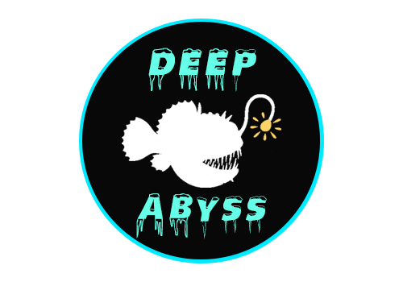

Home
|
Login
Cadastro
Site focado em curiosidades sobre a vida marinha na zona abissal
Descubra tudo sobre essas criaturas: como são, como vivem, tamanho, entre outras coisas.
Saiba mais
Cadastre-se